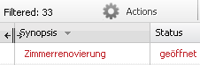

Link to this page
Print this page
Parent topic
:
Grid based view modes
Item navigator
/
Grid based view modes
Modifying column width
To modify the width of a column move the cursor to the right double bar of that column header.

Select and move the bar to increase or reduce the width of the column.